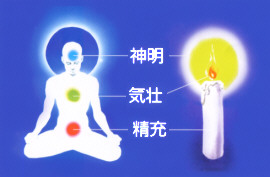

精充気壮神明の原理
精が充満すれば、気が壮んになり、神（人の霊性）が澄んで清くなるという意味。

下丹田の開発が完成され、肉体的な健康の問題が解決される状態。俗に精力といわれ、すべての活動の基盤になるエネルギーができる。
気壮は、
中丹田の開発が完成され、心が開いていく状態。気が壮んになると、気が成熟した成人になることができる。
神明は、
上丹田の開発が完成され、智恵が湧き、真理を悟ることができる状態。
Source: http://www.dahnhak.co.jp/t-genri-3.html